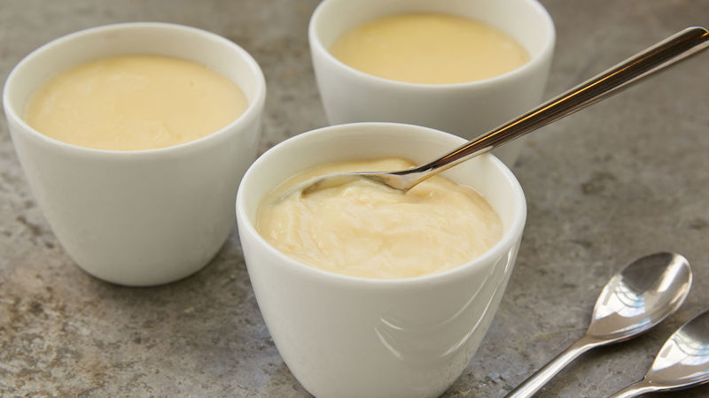

pudding

ingridienten
- 500 ml melk
- 120 mlroom
- 6 eieren
- 90 gvanillesuiker
- 20 g maïszetmeel (Maïzena)
- 2 vanillestokjes
bereiding
- Meet de juiste hoeveelheid melk en room af in een maatbeker.
-
Snij de vanillestokjes overlangs en schraap met de punt van een mes alle aromatische zaadjes eruit.
Doe ze bij de melk met room.
- Breng het mengsel van melk en room aan de kook op een matig vuur.
Laat de peulen van de vanillestokjes meekoken voor extra smaak.
- Scheid de eieren en doe de dooiers in een mengschaal.
Het eiwit gebruiken we niet. Klop het eigeel los met de garde en voeg de vanillesuiker toe.
- Klop met de garde tot de suiker opgelost is in het dooiermengsel.
-
Voeg het maiszetmeel toe en klop opnieuw met de garde.
- Verwijder de vanillepeulen uit het kokende mengsel van melk en room.
- Schenk een klein deel hiervan in de schaal met het mengsel van eigeel en suiker.
Roer met de garde en schenk het mengsel vervolgens in de pan met de rest van de warme melk met room.
-
Breng het puddingmengsel aan de kook, maar blijf voortdurend roeren met de garde.
Als het aanbrandt, is de pudding naar de vaantjes.
-
Laat de pudding indikken tot er mooie bubbels openbarsten aan het oppervlak.
-
Schenk de pudding in individuele schaaltjes of één grote schaal
- Leg op elke portie een petit-beurrekoekje. (Of chocolade-hagelslag voor de liefhebbers.)
- Eet de pudding warm of koud. Da’s een persoonlijke keuze.
Maar vergeet vooral niet om de pan met restjes pudding uit te likken…